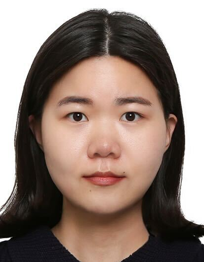
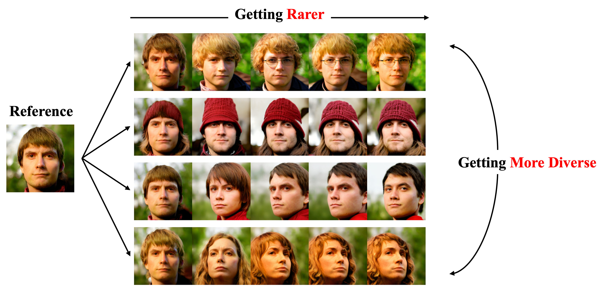
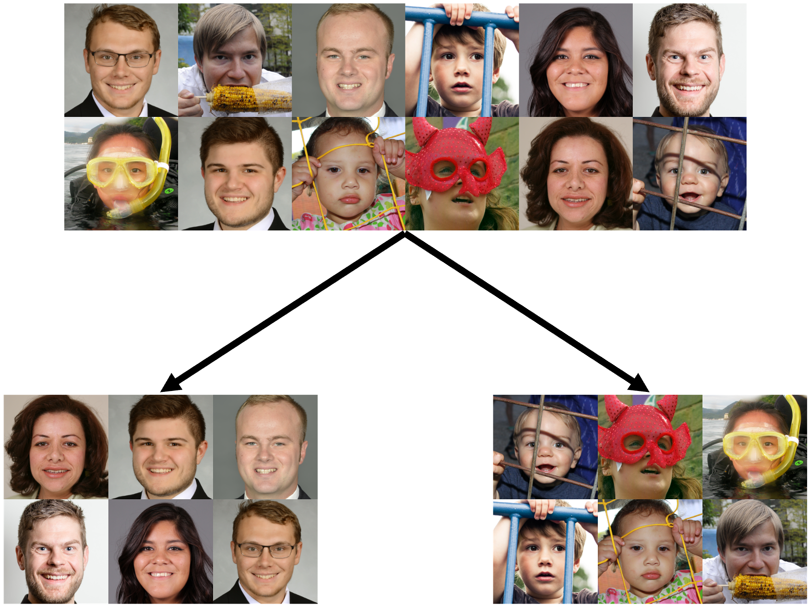
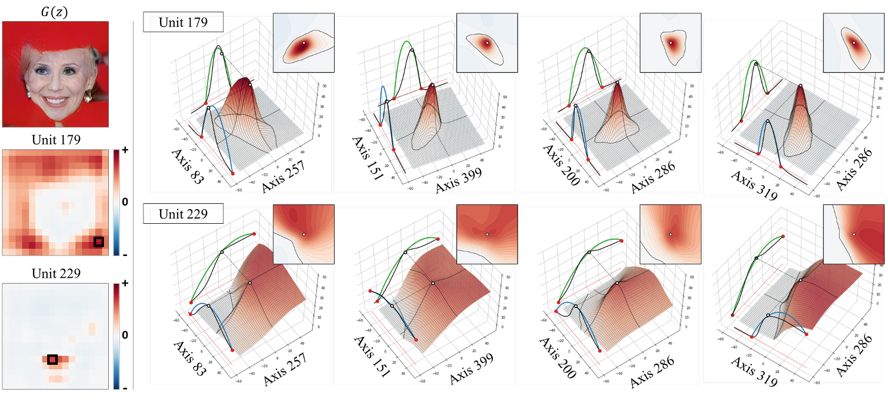
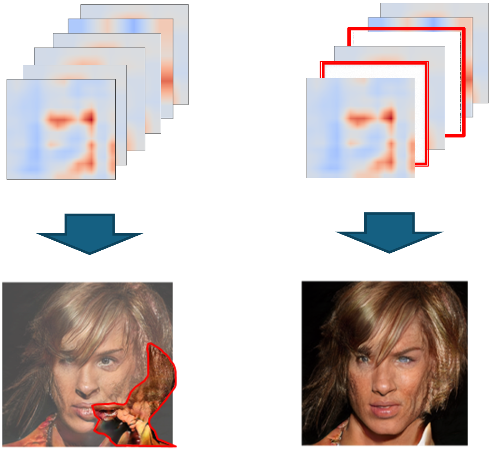
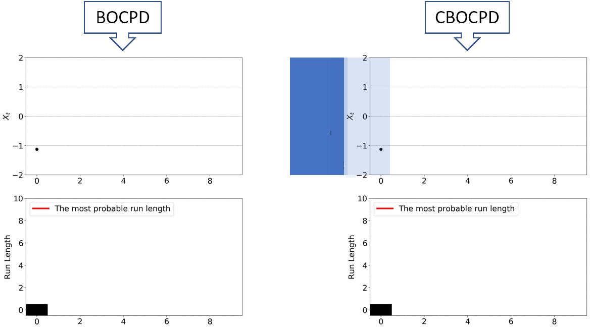

|
Jiyeon Han About Me I’m Jiyeon Han, a researcher in AI, currently beginning my postdoctoral position in the GrUVi Lab at the School of Computing Science, Simon Fraser University, under the supervision of Prof. Hao (Richard) Zhang. I recently completed my Ph.D. at KAIST, Korea, advised by Prof. Jaesik Choi. My dissertation, “Computational Creativity in AI: Assessing and Enhancing the Creative Output of Generative Models,” reflects my core research interests in developing reliable methods for evaluating creativity and enhancing the creative capabilities of generative models. |
 |
{kind=link}
ResearchI’m interested in building creative AI through generative models, with a broader focus on pushing the boundaries of what AI can achieve. I’m also deeply interested in understanding and analyzing the internal mechanisms of AI models to gain insights into how they learn, generate, and reason. |

|
Enhancing Creative Generation on Stable Diffusion-based Models
Jiyeon Han*, Dahee Kwon*, Gayoung Lee, Junho Kim, Jaesik Choi (* contributed equally) CVPR, 2025 github / arxiv We present a training-free approach to enhance creative generation on Stable-Diffusion-based models. We achieve this by amplifying low-frequency features in the shallow blocks in the pretrained models. |
|  |
Diverse Rare Sample Generation with Pretrained GANs
Subeen Lee, Jiyeon Han, Soyeon Kim, Jaesik Choi AAAI, 2025 github / arxiv This work explores a method for generating diverse rare samples that remain faithful to the original outputs of a pretrained GAN. By leveraging Normalizing Flows for density estimation, we enable end-to-end optimization to produce samples with lower data likelihood. |
|  |
Rarity Score : A New Metric to Evaluate the Uncommonness of Synthesized Images
Jiyeon Han, Hwanil Choi, Yunjey Choi, Junho Kim, Jung-Woo Ha, Jaesik Choi ICLR, 2023 (Oral Presentation) github / arxiv We present a new metric to assess rareness of an individual generated sample from pretrained generative models. Rarity score computes the (inverse) density of the sample estimated by k-NN based data manifold of real training data. |
|  |
An Unsupervised Way to Understand Artifact Generating Internal Units in Generative Neural Networks
Haedong Jeong, Jiyeon Han, Jaesik Choi AAAI, 2022 arxiv We investigate internal neurons that are closely associated with defective generations in generative neural networks. Our analysis reveals that neurons corresponding to artifact regions often exhibit abrupt local activation changes. Based on this observation, we propose the Local Activation Score to identify artifact-related neurons. |
|  |
Automatic Correction of Internal Units in Generative Neural Networks
Ali Tousi*, Haedong Jeong*, Jiyeon Han, Hwanil Choi, Jaesik Choi (* equally contributed) CVPR, 2021 arxiv This work proposes a method for automatically identifying internal feature maps responsible for defective generations. By training an external artifact classifier and applying the explainable AI technique Grad-CAM, we highlight the feature maps most strongly associated with artifact regions. Building on this, we introduce a sequential correction algorithm that progressively refines the generation by suppressing artifact-related activations. |
|  |
Confirmatory Bayesian Online Change Point Detection in the Covariance Structure of Gaussian Processes
Jiyeon Han*, Kyowoon Lee*, Anh Tong, Jaesik Choi (* equally contributed) IJCAI, 2019 project page / arxiv This work proposes a method for automatically identifying internal feature maps responsible for defective generations. By training an external artifact classifier and applying the explainable AI technique Grad-CAM, we highlight the feature maps most strongly associated with artifact regions. Building on this, we introduce a sequential correction algorithm that progressively refines the generation by suppressing artifact-related activations. |
Miscellanea |
Invited Talks |
LG AI Seminar, 2025 Ai4 Research Summit, 2024 |
Teaching |
TA - Deep Learning, Fall 2021
TA - AI-based Time Series Analysis, Spring 2021 TA - Deep Learning, Fall 2020 TA - Interpretability and Interactivity in AI, Spring 2020 TA - Star-MOOC, Fall 2018 TA - Principles of Programming Languages, Spring 2018 |
|
This website is built upon Jon Barron's source code. |